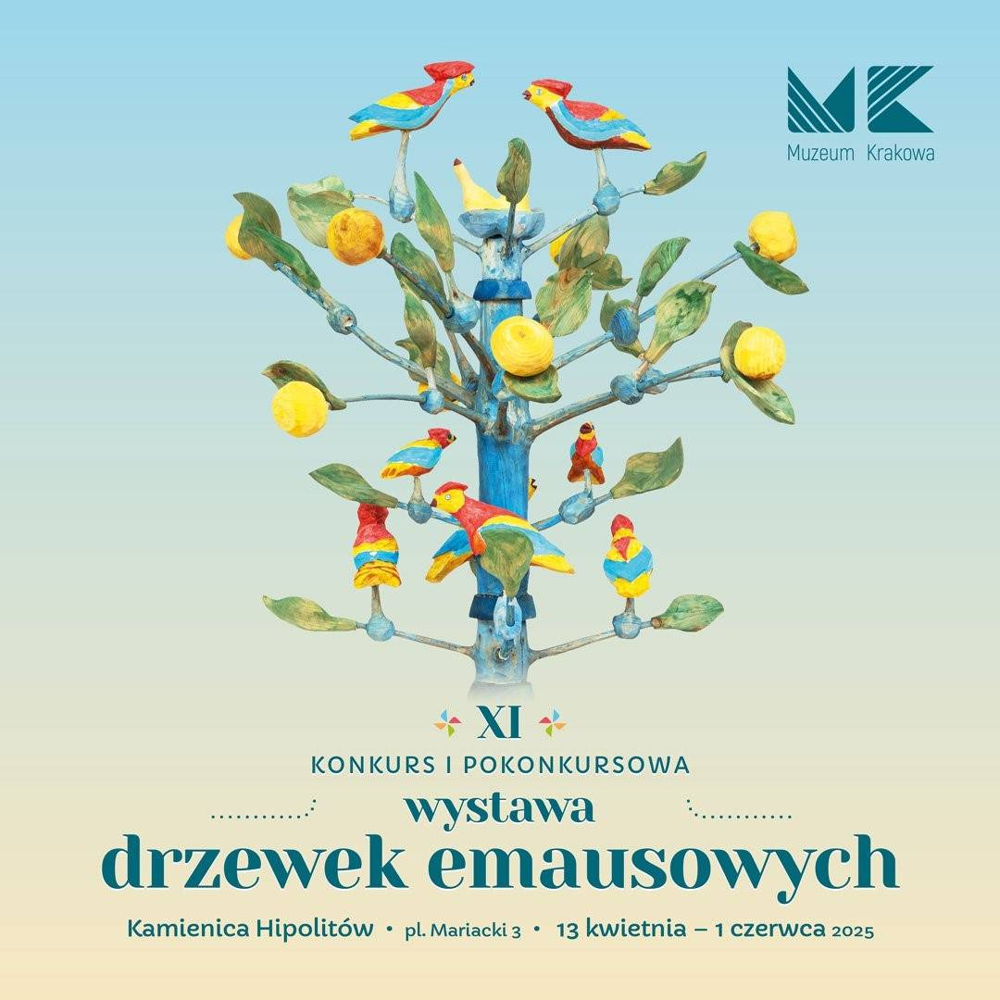

Krótkie Wprowadzenie
Wielkanoc to czas odradzania się życia, bogaty w głęboką symbolikę i
wielowiekowe obyczaje. To okres, w którym tradycja łączy się z radosnym oczekiwaniem
na wiosnę, a domowe zacisze wypełnia się wyjątkowymi dekoracjami i obrzędami.
Jednym z najbardziej fascynujących elementów tych świąt jest tradycja Drzewek Emausowych.
Te unikatowe rzeźby, nierozerwalnie związane z krakowskim odpustem Emaus, stanowią symboliczne
przedstawienie „drzewa życia”. Tradycyjne drzewko składa się z gniazda z figurkami ptaków lub
figurki Chrystusa Zmartwychwstałego, osadzonych na kunsztownie zdobionym patyku.
Dawniej wierzono, że przyniesienie go do domu zapewnia pomyślność i chroni przed nieszczęściem.
Dziś Drzewko Emausowe to przede wszystkim niezwykły przykład sztuki ludowej, który przypomina
o bogatym dziedzictwie kulturowym i nadejściu nowego życia.
Zobacz Dokumentacje
